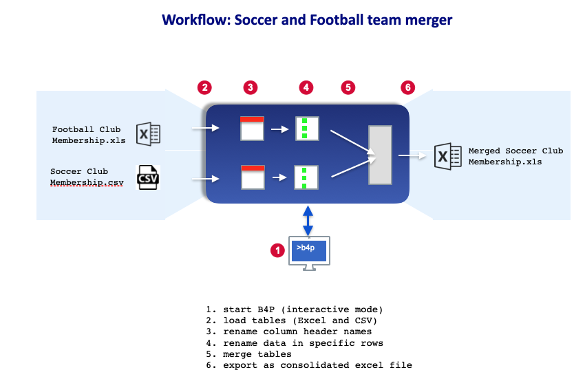

Merging two footbal teams
An example of merging and consolidating two sources of data describing football teams.

1.Start B4P in the command shell to use interactively
> b4pB4P - Beyond Former Performance
_______________________________________________________________________________
Version 8.00 Candidate (2020-08-08) 'Wilhelm Tell'
Copyright (C) 2012..2020 Georg zur Bonsen, all rights reserved.
Licensed (current user) with standard privileges for Rafael Richards.
Entering interactive mode.
Type 'help' for help, 'docs' for pdf manual, 'web docs' for online manual.
>>
Set the working directory to the data file directory, and list the files
>> $ cd /b4p/Examples
>> $ lsCurrent directory changed to '/b4p/Examples/'
Directory Listing:
Football Membership List.xlsx
Soccer Membership List.csv
Example.xml
Example1.json
Tennis and Golf Players.csv
test.csv
.
.
.
...
2. Load Football Membership List (Excel file), and list contents
>> table load excel file ( football club, Football Membership List.xlsx )
>> table list( football club ) Load Excel file 'Football Membership List.xlsx'.
Done. Table contains 12 rows and up to 4 columns.
0 : First Name | Family Name | City | Level
1 : Abel | Amberstone | Amsterdam | Beginner
2 : Beata | Berghill | Barcelona | Experienced
3 : Corinne | Carlson | Copenhagen | Beginner
4 : Dietmar | Davis | Dublin | Beginner
5 : Ellen | Evans | Essen | Beginner
6 : Fred | Fisher | Frankfurt | Experienced
7 : Gregory | Green | Gaza City | Experienced
8 : Henry | Hansson | Hamburg | Experienced
9 : Ida | Ingelberg | Ingolstadt | Beginner
10 : John | Janssen | Johannesburg | Beginner
11 : Karl | Karlsson | Kansas City | Experienced
Load Soccer Membership List (CSV file), and list contents
>> table load ( soccer club, Soccer Membership List.csv );
>> table list( soccer club )
Loaded CSV/TSV file 'Soccer Membership List.csv':
13 rows, max 4 columns, 4 columns in 1st row, 52 fields, list separator: ;
0 : Level | Town | Last Name | First Name
1 : Questionable | Kyoto | Karlsson | Karl
2 : Novice | London | Lee | Linda
3 : Experienced | Morristown | Miller | Mike
4 : Experienced | New York | Nguyen | Nathali
5 : Experienced | Oslo | Oliveiro | Oscar
6 : Novice | Phoenix | Paulsson | Petra
7 : Novice | Quebec City | Quarles | Quincy
8 : Experienced | Riga | Richardson | Richard
9 : Experienced | San Diego | Stewart | Sandra
10 : Experienced | Tahoma | Turner | Tim
11 : Questionable | Ulm | Ufford | Uwe
12 : Novice | Venice | Viking | Victor
Note that the football club and soccer club use different header names for the same thing (Family Name and Last Name; City and Town). In preparation to merge the football club table with the soccer club table, replace Family Name with Last Name, and City with Town.
3. Rename column headers to the same names for Last Name and Town
>> table rename column headers ( football club, { Family Name, City }, { Last Name, Town } );
>> table list( football club ) 0 : First Name | Last Name | Town | Level
1 : Abel | Amberstone | Amsterdam | Beginner
2 : Beata | Berghill | Barcelona | Experienced
3 : Corinne | Carlson | Copenhagen | Beginner
4 : Dietmar | Davis | Dublin | Beginner
5 : Ellen | Evans | Essen | Beginner
6 : Fred | Fisher | Frankfurt | Experienced
7 : Gregory | Green | Gaza City | Experienced
8 : Henry | Hansson | Hamburg | Experienced
9 : Ida | Ingelberg | Ingolstadt | Beginner
10 : John | Janssen | Johannesburg | Beginner
11 : Karl | Karlsson | Kansas City | ExperiencedNote that the football club table and soccer club table use different names for the same basic skill Level (Beginner and Novice). In preparation for merging the soccer club table with the football club table, find all instances of Level that is Novice, and replace with Beginner
4. Rename Level to Beginner wherever it appears as Novice
>> table process selected rows ( soccer club, [Level]==Novice, [Level]=Beginner );
>> table list( soccer club ) 0 : Level | Town | Last Name | First Name
1 : Questionable | Kyoto | Karlsson | Karl
2 : Beginner | London | Lee | Linda
3 : Experienced | Morristown | Miller | Mike
4 : Experienced | New York | Nguyen | Nathali
5 : Experienced | Oslo | Oliveiro | Oscar
6 : Beginner | Phoenix | Paulsson | Petra
7 : Beginner | Quebec City | Quarles | Quincy
8 : Experienced | Riga | Richardson | Richard
9 : Experienced | San Diego | Stewart | Sandra
10 : Experienced | Tahoma | Turner | Tim
11 : Questionable | Ulm | Ufford | Uwe
12 : Beginner | Venice | Viking | Victor5. Merge the football club table to the soccer club table (via appending)
>> table merge ( football club, soccer club, { Last Name, First Name }, { Level, Town }, append, " or " );
>> table list( soccer club )
Merged soccer club has 22 members.
0 : Level | Town | Last Name | First Name
1 : Questionable or Experienced | Kyoto or Kansas City | Karlsson | Karl
2 : Beginner | London | Lee | Linda
3 : Experienced | Morristown | Miller | Mike
4 : Experienced | New York | Nguyen | Nathali
5 : Experienced | Oslo | Oliveiro | Oscar
6 : Beginner | Phoenix | Paulsson | Petra
7 : Beginner | Quebec City | Quarles | Quincy
8 : Experienced | Riga | Richardson | Richard
9 : Experienced | San Diego | Stewart | Sandra
10 : Experienced | Tahoma | Turner | Tim
11 : Questionable | Ulm | Ufford | Uwe
12 : Beginner | Venice | Viking | Victor
13 : Beginner | Amsterdam | Amberstone | Abel
14 : Experienced | Barcelona | Berghill | Beata
15 : Beginner | Copenhagen | Carlson | Corinne
16 : Beginner | Dublin | Davis | Dietmar
17 : Beginner | Essen | Evans | Ellen
18 : Experienced | Frankfurt | Fisher | Fred
19 : Experienced | Gaza City | Green | Gregory
20 : Experienced | Hamburg | Hansson | Henry
21 : Beginner | Ingolstadt | Ingelberg | Ida
22 : Beginner | Johannesburg | Janssen | John
Sort the rows based on Level and Name
>> table sort rows ( soccer club, { Level, Last Name, First Name });
>> table list( soccer club ) 0 : Level | Town | Last Name | First Name
1 : Beginner | Amsterdam | Amberstone | Abel
2 : Beginner | Copenhagen | Carlson | Corinne
3 : Beginner | Dublin | Davis | Dietmar
4 : Beginner | Essen | Evans | Ellen
5 : Beginner | Ingolstadt | Ingelberg | Ida
6 : Beginner | Johannesburg | Janssen | John
7 : Beginner | London | Lee | Linda
8 : Beginner | Phoenix | Paulsson | Petra
9 : Beginner | Quebec City | Quarles | Quincy
10 : Beginner | Venice | Viking | Victor
11 : Experienced | Barcelona | Berghill | Beata
12 : Experienced | Frankfurt | Fisher | Fred
13 : Experienced | Gaza City | Green | Gregory
14 : Experienced | Hamburg | Hansson | Henry
15 : Experienced | Morristown | Miller | Mike
16 : Experienced | New York | Nguyen | Nathali
17 : Experienced | Oslo | Oliveiro | Oscar
18 : Experienced | Riga | Richardson | Richard
19 : Experienced | San Diego | Stewart | Sandra
20 : Experienced | Tahoma | Turner | Tim
21 : Questionable | Ulm | Ufford | Uwe
22 : Questionable or Experienced | Kyoto or Kansas City | Karlsson | KarlRearrange column order
>> table rearrange columns ( soccer club, { Level, First Name, Last Name, Town } );
>> table list( soccer club ) 0 : Level | First Name | Last Name | Town
1 : Beginner | Abel | Amberstone | Amsterdam
2 : Beginner | Corinne | Carlson | Copenhagen
3 : Beginner | Dietmar | Davis | Dublin
4 : Beginner | Ellen | Evans | Essen
5 : Beginner | Ida | Ingelberg | Ingolstadt
6 : Beginner | John | Janssen | Johannesburg
7 : Beginner | Linda | Lee | London
8 : Beginner | Petra | Paulsson | Phoenix
9 : Beginner | Quincy | Quarles | Quebec City
10 : Beginner | Victor | Viking | Venice
11 : Experienced | Beata | Berghill | Barcelona
12 : Experienced | Fred | Fisher | Frankfurt
13 : Experienced | Gregory | Green | Gaza City
14 : Experienced | Henry | Hansson | Hamburg
15 : Experienced | Mike | Miller | Morristown
16 : Experienced | Nathali | Nguyen | New York
17 : Experienced | Oscar | Oliveiro | Oslo
18 : Experienced | Richard | Richardson | Riga
19 : Experienced | Sandra | Stewart | San Diego
20 : Experienced | Tim | Turner | Tahoma
21 : Questionable | Uwe | Ufford | Ulm
22 : Questionable or Experienced | Karl | Karlsson | Kyoto or Kansas City6. Save table as a new, merged club list in an Excel file
>> table save ( soccer club, Merged Soccer Club Membership List.xls, EXCEL );Saved table(s) to EXCEL-XML2003 file 'New Soccer Club Membership List.xls' containing 1 sheets.B4P program
Interactive code combined as single B4P program
runtime settings[verbose] = low;
working directory ( Examples );
table load excel file ( football club, Football Membership List.xlsx );
table list ( football club );
table load ( soccer club, Soccer Membership List.csv ); // Beginners are Novices here
table list ( soccer club );
table rename column headers ( football club, { Family Name, City }, { Last Name, Town } );
table process selected rows ( soccer club, [Level]==Novice, [Level]=Beginner );
table merge ( football club, soccer club, { Last Name, First Name }, { Level, Town }, append, " or " );
echo ("Merged soccer club has ", table length( soccer club )-1, " members.");
table sort rows ( soccer club, { Level, Last Name, First Name });
table rearrange columns ( soccer club, { Level, First Name, Last Name, Town } );
table list ( soccer club );
table save ( soccer club, Merged Soccer Club Membership List.xls, EXCEL );B4P Program execution
Included: Support Library 4.00
Included: Utility Library 3.00
Included: Office Library 4.00
Included: Zip Library 3.00
Loaded EXCEL file 'Football Membership List.xlsx':
12 rows, max 4 columns, 4 columns in 1st row
0 : First Name | Family Name | City | Level
1 : Abel | Amberstone | Amsterdam | Beginner
2 : Beata | Berghill | Barcelona | Experienced
3 : Corinne | Carlson | Copenhagen | Beginner
4 : Dietmar | Davis | Dublin | Beginner
5 : Ellen | Evans | Essen | Beginner
6 : Fred | Fisher | Frankfurt | Experienced
7 : Gregory | Green | Gaza City | Experienced
8 : Henry | Hansson | Hamburg | Experienced
9 : Ida | Ingelberg | Ingolstadt | Beginner
10 : John | Janssen | Johannesburg | Beginner
11 : Karl | Karlsson | Kansas City | Experienced
Loaded CSV/TSV file 'Soccer Membership List.csv':
13 rows, max 4 columns, 4 columns in 1st row, 52 fields, list separator: ;
0 : Level | Town | Last Name | First Name
1 : Questionable | Kyoto | Karlsson | Karl
2 : Novice | London | Lee | Linda
3 : Experienced | Morristown | Miller | Mike
4 : Experienced | New York | Nguyen | Nathali
5 : Experienced | Oslo | Oliveiro | Oscar
6 : Novice | Phoenix | Paulsson | Petra
7 : Novice | Quebec City | Quarles | Quincy
8 : Experienced | Riga | Richardson | Richard
9 : Experienced | San Diego | Stewart | Sandra
10 : Experienced | Tahoma | Turner | Tim
11 : Questionable | Ulm | Ufford | Uwe
12 : Novice | Venice | Viking | Victor
Merged soccer club has 22 members.
0 : Level | First Name | Last Name | Town
1 : Beginner | Abel | Amberstone | Amsterdam
2 : Beginner | Corinne | Carlson | Copenhagen
3 : Beginner | Dietmar | Davis | Dublin
4 : Beginner | Ellen | Evans | Essen
5 : Beginner | Ida | Ingelberg | Ingolstadt
6 : Beginner | John | Janssen | Johannesburg
7 : Beginner | Linda | Lee | London
8 : Beginner | Petra | Paulsson | Phoenix
9 : Beginner | Quincy | Quarles | Quebec City
10 : Beginner | Victor | Viking | Venice
11 : Experienced | Beata | Berghill | Barcelona
12 : Experienced | Fred | Fisher | Frankfurt
13 : Experienced | Gregory | Green | Gaza City
14 : Experienced | Henry | Hansson | Hamburg
15 : Experienced | Mike | Miller | Morristown
16 : Experienced | Nathali | Nguyen | New York
17 : Experienced | Oscar | Oliveiro | Oslo
18 : Experienced | Richard | Richardson | Riga
19 : Experienced | Sandra | Stewart | San Diego
20 : Experienced | Tim | Turner | Tahoma
21 : Questionable | Uwe | Ufford | Ulm
22 : Questionable or Experienced | Karl | Karlsson | Kyoto or Kansas City
Saved table(s) to EXCEL-XML2003 file 'Merged Soccer Club Membership List.xls' containing 1 sheets.